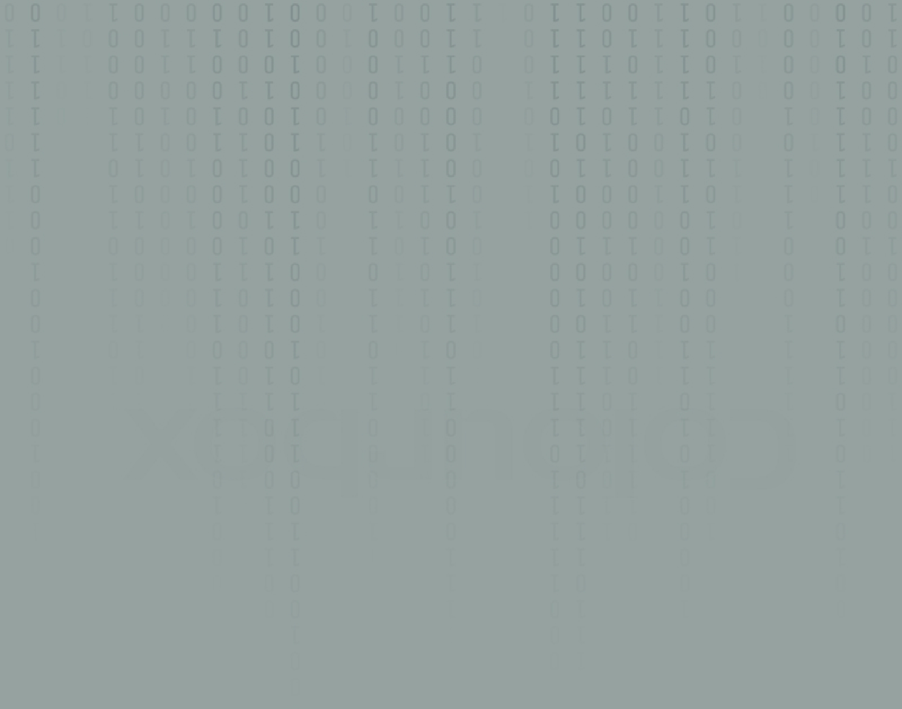

G
rundlæggende web
I trema 2 “grundlæggende HTML” har vi lært om forskellige stile og
måder at udtrykke sig på grafisk.
Vi blev i vores grupper tildelt en bestemt stil, hvorefter vi hver især skulle kode en hjemmeside med den givne stil.
Under hele forløbet kom vi igennem forskellige designprocesser og layoutprincipper.
Blandt andet forskellige fonte, text typer, flexbox, analyse af splashbillede, grid, typografi og styletile. Ved brug af disse redskaber har vi hver især formået, at skabe en hjemmeside i en bestemt stil.
Vi blev i vores grupper tildelt en bestemt stil, hvorefter vi hver især skulle kode en hjemmeside med den givne stil.
Under hele forløbet kom vi igennem forskellige designprocesser og layoutprincipper.
Blandt andet forskellige fonte, text typer, flexbox, analyse af splashbillede, grid, typografi og styletile. Ved brug af disse redskaber har vi hver især formået, at skabe en hjemmeside i en bestemt stil.